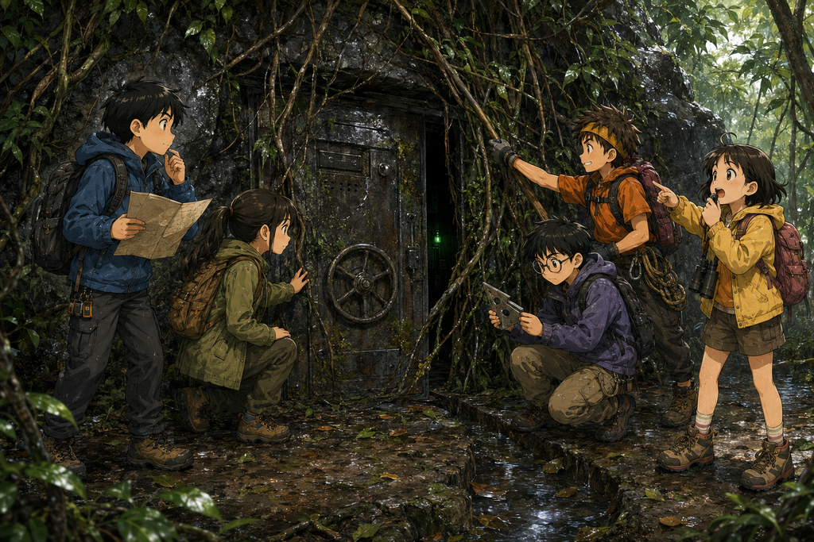

ZERO-07
เวลาอ่านประมาณ 18 นาที · Materials / Rust / Mystery
เสียงโลหะหนักที่ดังจากหลังพุ่มไม้ยังค้างอยู่ในความเงียบ
กึง!
เด็กทั้งห้าหยุดนิ่ง ไม่มีใครกล้าหายใจแรง
ฟ้าถือนกหวีดไว้ในมือ แต่ไม่ได้เป่า เธอมองหน้านนท์รอคำสั่ง
ต้นกล้ายืนอยู่ด้านหน้าเหมือนพร้อมจะพุ่ง แต่ครั้งนี้เขาไม่พุ่ง เขาแค่กำกิ่งไม้ยาวไว้แน่น
นนท์ยกมือช้า ๆ “ยังไม่เข้าไปใกล้”
มีนามองพื้นรอบพุ่มไม้ “ตรงนี้มีรอยน้ำไหล ถ้าเหยียบผิดอาจลื่นลงร่องได้”
ปั้นก้มดูเข็มทิศ แล้วเทียบกับแผ่นโลหะลูกศรที่เจอในตอนก่อน “ลูกศรชี้เข้าพุ่มไม้ตรงนี้จริง ๆ”
หลังพุ่มไม้มีเพียงเงาดำกับรากไม้พันกันแน่น
แต่ทุกคนรู้สึกเหมือนมีบางอย่างกำลังมองกลับมา ทั้งที่ไม่มีดวงตาอยู่ตรงนั้นเลย
1
ต้นกล้าใช้กิ่งไม้ยาวแหวกพุ่มอย่างระวัง เขายืนห่างพอให้ถอยได้ทันถ้ามีอะไรหล่นหรือขยับ
เถาวัลย์เปียกฝนหนักจนดูเหมือนเชือกสีเขียวเข้ม เมื่อมันถูกเลื่อนออก สิ่งแรกที่เห็นไม่ใช่ประตู แต่เป็นผนังหินสีดำเปียกน้ำ
ฟ้าชี้ทันที “หินมีเส้นตรงด้วยเหรอคะ”
ไม่มีใครตอบ เพราะทุกคนเห็นเส้นเดียวกัน
บนผนังหินมีรอยเส้นตรงแนวตั้ง เส้นนั้นตรงเกินกว่าจะเป็นรอยแตกธรรมชาติ และเมื่อมีนาใช้กิ่งไม้เขี่ยมอสออกเบา ๆ เส้นอีกด้านก็ปรากฏขึ้น
“มันเป็นขอบ” มีนาพูด
นนท์ค่อย ๆ เดินเข้าไปใกล้ เขาไม่ได้แตะพื้นผิวด้วยมือเปล่า แต่ใช้ปลายกิ่งเคาะเบา ๆ
ก๊อง...
เสียงที่กลับมาไม่ใช่เสียงหิน
ต้นกล้าตาโต “หินที่ร้องเป็นโลหะ”
ปั้นขยับแว่น “หรือโลหะที่ปลอมตัวเป็นหิน”
พวกเขาช่วยกันปัดเถาวัลย์และใบไม้เปียกออกทีละน้อย เส้นตรงกลายเป็นขอบสี่เหลี่ยมสูงกว่าสองเมตร พื้นผิวดูคล้ายหินเพราะมีคราบตะไคร่และดินเกาะหนา แต่ใต้คราบนั้นคือแผ่นโลหะสีดำด้าน
ตรงกลางมีวงล้อหนาเหมือนประตูเรือเก่า และเหนือวงล้อมีแผ่นอักษรเล็ก ๆ ถูกคราบสีเขียวบังจนแทบอ่านไม่ออก
นนท์ใช้ผ้าหุ้มปลายนิ้วแล้วเช็ดเบา ๆ
ZERO-07
นี่เป็นครั้งแรกที่ทีม ZERO พบประตูของสถานีจริง ๆ

ประตูที่ไม่มีในแผนที่ซ่อนอยู่ใต้เถาวัลย์มานานกว่ายี่สิบปี
2
ต้นกล้ามองวงล้อกลางประตูเหมือนมันเป็นคำท้า
“ผมลองหมุนได้ไหม”
“ยัง” นนท์ มีนา และปั้นพูดพร้อมกัน
ฟ้ากระซิบ “หนูเริ่มรู้แล้วว่าคำว่า ยัง เป็นคำสำคัญของทีมเรา”
ต้นกล้ายกมือทั้งสองข้าง “โอเค ยังไม่หมุน”
มีนาชี้คราบส้มตามขอบวงล้อและนอตบางตัว “ตรงนี้เป็นสนิม”
เธอหยิบใบไม้แห้งที่ติดอยู่บนพื้นขึ้นมา แล้วแตะคราบส้มเบา ๆ คราบบางส่วนหลุดติดใบไม้มาเป็นผงละเอียด
“ถ้าเป็นเหล็กและโดนน้ำกับอากาศนาน ๆ มันอาจเกิดสนิมจนชิ้นส่วนติดกัน”
ปั้นเอียงคอมองประตู “แต่แปลกนะ”
“อะไรแปลก” ฟ้าถาม
“พื้นผิวประตูส่วนใหญ่ไม่มีสนิม มีแค่ขอบ นอต และรอยถลอกบางจุด”
นนท์มองตาม “ถ้าทิ้งไว้นานเท่ากัน ทำไมบางส่วนผุ แต่บางส่วนยังดี?”
มีนาแตะหินข้างประตู “อาจเป็นโลหะคนละชนิด หรือมีสารเคลือบกันสนิม ส่วนที่ถลอกเลยเป็นสนิมก่อน”
ต้นกล้าทำหน้าคิด “แปลว่าประตูนี้ใส่เสื้อกันฝนของตัวเอง?”
“ประมาณนั้น” นนท์ตอบ “แต่ถ้าเสื้อขาดตรงไหน ตรงนั้นก็เปียกก่อน”
ปั้นจดลงสมุด “ประตูโลหะเคลือบผิว สนิมเฉพาะจุด แปลว่าถูกออกแบบให้ทนสภาพอากาศ”
คำว่า ถูกออกแบบ ทำให้ทุกคนเงียบไปครู่หนึ่ง
เพราะสิ่งนี้ไม่ใช่เศษเหล็กเก่าที่หลงอยู่ในป่า แต่มันเป็นสิ่งที่มีคนตั้งใจซ่อน
3
ข้างประตูมีแผงเล็กขนาดประมาณกล่องรองเท้า ฝาปิดบวมออกเพราะสนิมและรากไม้เส้นเล็กแทรกอยู่รอบขอบ
นนท์ใช้ผ้าหุ้มมือก่อนแตะฝา แต่เขายังไม่เปิดทันที
“ก่อนทำอะไร เราดูรอบ ๆ ก่อน”
ฟ้าชี้พื้นหน้าแผง “ตรงนี้เปียกมากค่ะ”
หยดน้ำจากเถาวัลย์ด้านบนไหลลงมาตามผนัง ผ่านรอยแตก แล้วหยดใกล้แผงโลหะพอดี
มีนาพูดช้า ๆ “ถ้าข้างในยังมีไฟฟ้า พื้นเปียกทำให้เสี่ยงขึ้น”
ทุกคนถอยออกมาทันที แม้แต่ต้นกล้า
ปั้นก้มดูเสาไฟ Z-07 ที่อยู่ในความทรงจำของเขา “เสาเก่าแต่ยังมีไฟ ประตูนี้ก็อาจยังมีระบบบางอย่าง”
นนท์ไม่ใช้มือเปล่า เขาใช้กิ่งไม้แห้งยาวดันฝาแผงเบา ๆ จากด้านข้าง ฝาไม่ขยับ เขาจึงหยุด ไม่งัดต่อ
“ถ้าต้องใช้แรงมาก แปลว่าเราอาจทำพัง หรือทำให้บางอย่างทำงานผิด”
ต้นกล้าพยักหน้า “ผมเริ่มไม่ชอบประตูที่ชอบให้คิดเยอะ”
มีนาเดินดูพื้นรอบประตู แล้วพบว่ารางระบายน้ำเล็ก ๆ ถูกใบไม้และโคลนอุดไว้ น้ำจึงขังตรงหน้าแผง
“ถ้าน้ำออกไปได้ พื้นตรงนี้จะปลอดภัยขึ้น”
ต้นกล้ายิ้ม “อันนี้ผมทำได้แบบไม่จับสายไฟ”
เขาใช้กิ่งยาวเขี่ยใบไม้จากระยะปลอดภัย น้ำขุ่นค่อย ๆ ไหลลงร่องข้างหิน เผยพื้นคอนกรีตเก่าที่ซ่อนอยู่ใต้โคลน
ฟ้าตาโต “พื้นป่ามีพื้นอีกชั้น”
บนพื้นคอนกรีต มีรูเล็กสามรูเรียงเป็นรูปสามเหลี่ยมอยู่ใกล้วงล้อประตู
4
ปั้นหยิบแผ่นโลหะลูกศรที่พวกเขาพบในตอนก่อนออกมา
มันเป็นแผ่นเล็กเท่าฝ่ามือ มีรอยลูกศรตื้น ๆ และมีปุ่มนูนสามจุดด้านหลัง
เขาค่อย ๆ วางเทียบกับรูบนพื้น โดยไม่เสียบลงไปทันที
รูทั้งสามตรงกันพอดี
ฟ้ากระซิบ “เหมือนกุญแจ”
“หรือเครื่องมือ” นนท์พูด “แต่เรายังไม่รู้ว่ามันทำอะไร”
ต้นกล้ามองวงล้อ “ถ้านี่เป็นเกม ผมว่าต้องเสียบแล้วหมุน”
มีนามองเขา “นี่ไม่ใช่เกม”
“ผมรู้ครับ แต่บางครั้งคนสร้างของจริงก็คิดเหมือนคนสร้างเกมนะ”
ปั้นชี้สัญลักษณ์บนแผงด้านข้างที่สีลอกจนแทบไม่เห็น “มีวงกลม สามเหลี่ยม และเส้นคลื่น เหมือนบอกลำดับหรือระบบสามอย่าง”
นนท์ใช้ผ้าปัดฝุ่นบนแผงโดยไม่แตะสายด้านใน เขาเห็นคันโยกสามอันอยู่หลังฝาปิดที่แง้มออกเพียงนิดเดียว แต่สีป้ายลอกหมด
“คันโยกดูเสี่ยงกว่าแผ่นลูกศร” นนท์พูด “เพราะต่อกับระบบข้างในโดยตรง”
ฟ้ามองหยดน้ำที่ยังเกาะอยู่ตามขอบแผง “ถ้ามันยังมีไฟเหมือนเสา เราไม่ควรยืนบนพื้นเปียกตรงนี้ใช่ไหมคะ”
“ใช่” มีนาตอบทันที “และไม่ควรจับโลหะด้วยมือเปียก”
คำถามของฟ้าทำให้ทุกคนถอยห่างจากแผงอีกครั้ง
🧠 จุดให้คิดประจำตอน
ประตูติดแน่น มีสนิมบางจุด และอาจมีระบบไฟฟ้าเก่า ทีมควรทำอย่างไร?
A. จับคันโยกทุกอันพร้อมกัน เผื่อมีอันหนึ่งเปิดได้
B. ใช้แรงกระแทกวงล้อจนกว่าจะหมุน
C. หลีกเลี่ยงส่วนไฟฟ้า ตรวจวัสดุและกลไกจากภายนอก แล้วใช้ชิ้นส่วนที่มีรูปทรงตรงกัน
ลองเลือกก่อนอ่านต่อ
5
ทีมเลือก C อย่างระมัดระวัง
นนท์ให้ทุกคนยืนบนพื้นที่แห้งกว่าและไม่แตะประตูพร้อมกัน ปั้นจับเวลาและนับรอบ มีนาคอยดูรอยขอบประตู ต้นกล้าพร้อมช่วยออกแรงเฉพาะตอนที่นนท์บอก ส่วนฟ้าถือนกหวีดเตรียมส่งสัญญาณหากเกิดอันตราย
นนท์เสียบแผ่นลูกศรลงในรูสามรูอย่างช้า ๆ
มันลงล็อกพอดีจนเกิดเสียงเบามาก
ติ๊ก
ทุกคนหยุดฟัง
ไม่มีไฟแลบ ไม่มีเสียงเตือน ไม่มีอะไรระเบิด มีเพียงน้ำหยดจากใบไม้
“ยังดีอยู่” ต้นกล้ากระซิบ
นนท์มองรอยลูกศรบนแผ่น “มันบอกทิศหมุน”
เขาหมุนแผ่นไปตามลูกศรอย่างช้า ๆ ตอนแรกมันฝืดมากจนแทบไม่ขยับ แต่หลังจากผ่านจุดหนึ่ง เสียงกลไกก็ดังลึกเข้าไปในผนัง
แกร๊ก... แกร๊ก...
วงล้อหน้าประตูคลายตัวเล็กน้อย
ต้นกล้าหายใจเข้า “ตอนนี้ผมหมุนได้ยัง”
นนท์มองทุกคน แล้วพยักหน้า “ช่วยกัน แต่ช้า ๆ”
ต้นกล้ากับนนท์จับวงล้อผ่านผ้า มีนาคอยดูขอบประตู ปั้นนับรอบเสียงดังในกลไก
หนึ่ง...
สอง...
สาม...
รอบที่สี่ วงล้อยังฝืด
รอบที่ห้า สนิมบางส่วนหลุดเป็นผงส้ม
รอบที่หก มีเสียงลมเบา ๆ ดังจากขอบประตู
รอบที่เจ็ด กลไกด้านในปลดล็อก
กึก!
ลมเย็นจัดพุ่งออกจากรอยแคบ กลิ่นโลหะ ฝุ่น และอากาศเก่าปะปนกันจนฟ้าต้องย่นจมูก
ทุกคนหยุด ไม่มีใครรีบเข้าไป
6
“ข้างในอาจมีอากาศไม่พอ หรือมีก๊าซที่เราไม่รู้จัก” มีนาเตือน
ต้นกล้าถอยหนึ่งก้าว “ผมไม่รู้จักก๊าซเลยหลายตัว”
“นั่นแหละปัญหา” ปั้นพูด
นนท์ใช้เชือกผูกวงล้อไว้กับรากไม้ใหญ่ด้านข้าง เพื่อกันไม่ให้ประตูปิดเอง เขาเปิดประตูไว้เพียงช่องแคบ ไม่กว้างพอให้ใครลอดเข้าไป
จากนั้นเขาวางเศษใบไม้แห้งเบา ๆ ไว้หน้าช่องประตู
ใบไม้ถูกดูดเข้าหาช่องแคบเล็กน้อย แล้วค่อย ๆ หยุดเมื่อแรงลมลดลง
ฟ้ามองอย่างสนใจ “ใบไม้บอกว่าในนั้นกำลังหายใจเข้า?”
นนท์ตอบ “มันบอกว่าอากาศสองด้านมีแรงดันต่างกัน พอเปิดช่อง อากาศเลยไหลจนค่อย ๆ สมดุล”
มีนาพยักหน้า “เรารอให้ลมแปลก ๆ หยุดก่อนดีที่สุด”
ระหว่างรอ ไม่มีใครพูดมาก เสียงป่ากลับมาเบา ๆ รอบตัว แต่ทุกคนรู้สึกเหมือนโลกอีกใบกำลังอยู่หลังประตูแคบ ๆ ตรงหน้า
เมื่อลมจากช่องประตูนิ่งลง นนท์ส่องไฟโทรศัพท์เข้าไปโดยไม่ยื่นตัวตามแสง
แสงตกลงบนบันไดโลหะที่ทอดลงด้านล่าง ขั้นบันไดมีฝุ่นและคราบน้ำ แต่ยังดูแข็งแรง
ลึกลงไป มีไฟฉุกเฉินสีเขียวหนึ่งดวงติดอยู่บนผนัง
ปั้นมองนาฬิกาแล้วพูดช้า ๆ “ถ้าสถานีถูกทิ้งยี่สิบปี แต่ไฟยังติด แปลว่ามีแหล่งพลังงานบางอย่าง”
ฟ้ากระซิบ “หรือมีใครดูแลอยู่”
ไม่มีใครตอบ เพราะไม่มีคำตอบไหนทำให้รู้สึกสบายใจขึ้น
บนผนังด้านใน มีตัวเลขสีขาวเรียงลงมา
12 · 11 · 10 · 09 · 08 · 07
และใต้เลข 07 มีช่องว่างสำหรับชื่อห้าชื่อ
ต้นกล้าอ่านแล้วเสียงเบาลง “ช่องว่างห้าชื่อ...”
ไฟสีเขียวด้านในกะพริบหนึ่งครั้ง
สองครั้ง
สามครั้ง
สี่ครั้ง
ห้าครั้ง
เท่าจำนวนเด็กที่ยืนอยู่หน้าประตูพอดี
ก่อนที่ใครจะพูด เสียงลำโพงแตกพร่าก็ดังจากความมืด
ซ่าาา...
แล้วเงียบ
ประตู ZERO-07 เปิดเพียงช่องแคบ แต่สำหรับทีม ZERO มันกว้างพอแล้วที่จะทำให้ป่าทั้งผืนบนแผนที่ดูไม่เหมือนเดิมอีกต่อไป
🔬 วิทยาศาสตร์ในตอนนี้
โลหะแต่ละชนิดและสารเคลือบต้านการกัดกร่อนได้ต่างกัน สนิมของเหล็กต้องอาศัยน้ำและออกซิเจน ส่วนที่สารเคลือบหลุดหรือเกิดรอยถลอกจึงมักเสียหายก่อน
พื้นที่ปิดเก่าอาจมีอากาศไม่ปลอดภัย ไม่ควรรีบเข้าไปทันที ควรหลีกเลี่ยงส่วนไฟฟ้า ระบายอากาศ สังเกตแรงลม และรอให้สภาพนิ่งขึ้นก่อนตัดสินใจ